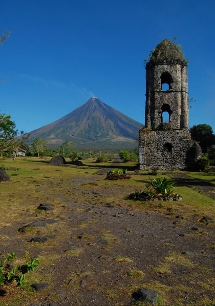

The Bicol Region, also known as Region 5, is a region located in the southeastern part of Luzon, the largest island in the Philippines. It is composed of six provinces: Albay, Camarines Norte, Camarines Sur, Catanduanes, Masbate, and Sorsogon. Bicol Region is known for its stunning landscapes, natural attractions, rich cultural heritage, and spicy cuisine.
Albay is a province known for its iconic Mayon Volcano, often considered the world's most perfectly formed volcano. The volcano's near-perfect cone shape is a breathtaking sight. Albay is also home to beautiful beaches, waterfalls, and historical sites such as the Cagsawa Ruins, a remnant of a Spanish-era church destroyed during the eruption of Mayon Volcano.
Camarines Norte is a province known for its unspoiled beaches and natural attractions. It offers opportunities for beach hopping, snorkeling, and island hopping. One of its famous destinations is Calaguas Island, known for its pristine white sand beaches and crystal-clear waters.
Camarines Sur is a province that offers a combination of natural and adventure attractions. It is home to Caramoan Peninsula, known for its picturesque islands, limestone cliffs, and hidden lagoons. Camarines Sur is also known for its world-class water sports complex, the Camsur Watersports Complex (CWC), which offers wakeboarding and other water activities.
Catanduanes is an island province known for its rugged coastlines, lush forests, and surfing spots. It is often called the "Land of the Howling Winds" due to its exposure to typhoons. Catanduanes offers beautiful beaches, stunning waterfalls, and the iconic Balacay Point, a popular surfing destination.
Masbate is an island province known for its rich marine resources and cultural heritage. It offers opportunities for snorkeling, diving, and exploring pristine beaches. Masbate is also known for its colorful festivals, such as the Rodeo Masbateño, showcasing cowboy-style competitions and showcasing the province's cowboy culture.
Sorsogon is a province known for its natural wonders and marine biodiversity. It offers opportunities for whale shark encounters in Donsol, where visitors can swim with these gentle giants. Sorsogon is also home to beautiful beaches, hot springs, and the stunning Mount Bulusan, an active volcano that attracts hikers and nature enthusiasts.
Bicol Region is also famous for its spicy cuisine, which features the use of chili peppers, coconut milk, and local ingredients. Dishes like Bicol Express and Laing are must-try delicacies for those who appreciate bold flavors.